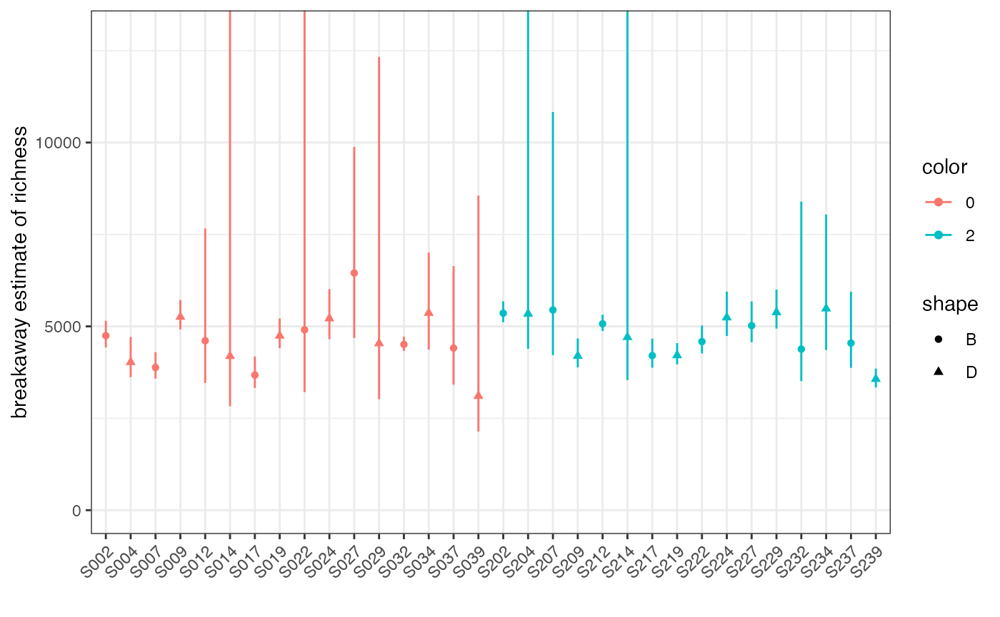

vignettes/diversity-hypothesis-testing.Rmd
diversity-hypothesis-testing.RmdThis tutorial will talk through hypothesis testing for alpha
diversity indices using the functions betta and
betta_random.
Disclaimer: If you have not taken a introductory statistics class or devoted serious time to learning introductory statistics, I strongly encourage you to reconsider doing so before ever quoting a p-value or doing modeling of any kind. An introductory statistics class will teach you valuable skills that will serve you well throughout your entire scientific career, including the use and abuse of p-values in science, how to responsibly fit models and test null hypotheses, and an appreciation for how easy it is to inflate the statistical significance of a result. Please equip yourself with the statistical skills and scepticism necessary to responsibly test and discuss null hypothesis significance testing.
Download the latest version of the package from github.
Let’s use the Whitman et al dataset as our example.
## Plants DayAmdmt Amdmt ID Day
## S009 1 01 1 D 0
## S204 1 21 1 D 2
## S112 0 11 1 B 1
## S247 0 22 2 F 2
## S026 0 00 0 A 0
## S023 1 00 0 C 0I’m only going to consider samples amended with biochar, and I want
to look at the effect of Day. This will tell us how much
diversity in the soil changed from Day 0 to Day 82. (Just to be
confusing, Day 82 is called Day 2 in the dataset.)
subset_soil <- soil_phylo %>%
subset_samples(Amdmt == 1) %>% # only biochar
subset_samples(Day %in% c(0, 2)) # only Days 0 and 82I now run breakaway on these samples to get richness estimates, and plot them.
richness_soil <- subset_soil %>% breakaway
plot(richness_soil, physeq=subset_soil, color="Day", shape = "ID")
Don’t freak out! Those are wide error bars, but nothing went wrong –
it’s just really hard to estimate the true number of unknown species in
soil. breakaway was developed to deal with this, and to
make sure that we account for that uncertainty when we do inference.
We can get a table of the estimates and their uncertainties as follows:
## # A tibble: 32 × 7
## estimate error lower upper sample_names name model
## <dbl> <dbl> <dbl> <dbl> <chr> <chr> <chr>
## 1 5257. 203. 4918. 5719. S009 breakaway Kemp
## 2 5343. 2252. 4391. 18132. S204 breakaway Kemp
## 3 4609. 978. 3461. 7662. S012 breakaway Kemp
## 4 5446. 1393. 4218. 10831. S207 breakaway Kemp
## 5 5359. 143. 5115. 5680. S202 breakaway Kemp
## 6 3882. 181. 3580. 4297. S007 breakaway Kemp
## 7 4906. 4787. 3213. 33688. S022 breakaway Kemp
## 8 5215. 343. 4652. 6011. S024 breakaway Negative Binomial
## 9 4509. 98.9 4331. 4720. S032 breakaway Kemp
## 10 5070. 114. 4873. 5321. S212 breakaway Kemp
## # ℹ 22 more rowsIf you haven’t seen a tibble before, it’s like a
data.frame, but way better. Already we can see that we only
have 10 rows printed as opposed to the usual bagillion.
The first step to doing inference is to decide on your design matrix. We need to grab our covariates into a data frame (or tibble), so let’s start by doing that:
meta <- subset_soil %>%
sample_data %>%
tibble::as_tibble() %>%
dplyr::mutate("sample_names" = subset_soil %>% sample_names )That warning is not a problem – it’s just telling us that it’s not a phyloseq object anymore.
Suppose we want to fit the model with Day as a fixed effect. Here’s how we do that,
combined_richness <- meta %>%
dplyr::left_join(summary(richness_soil),
by = "sample_names")
# Old way (still works)
bt_day_fixed <- betta(chats = combined_richness$estimate,
ses = combined_richness$error,
X = model.matrix(~Day, data = combined_richness))
# Fancy new way -- thanks to Sarah Teichman for implementing!
bt_day_fixed <- betta(formula = estimate ~ Day,
ses = error, data = combined_richness)
bt_day_fixed$table## Estimates Standard Errors p-values
## (Intercept) 4547.1109 186.9647 0.000
## Day2 139.5292 252.8216 0.581So we see an estimated increase in richness after 82 days of 122 taxa, with the standard error in the estimate of 171. A hypothesis test for a change in richness (i.e., testing a null hypothesis of no change) would not be rejected at any reasonable cut-off (p = 0.581).
Alternatively, we could fit the model with plot ID as a random effect. Here’s how we do that:
# Old way (still works)
bt_day_fixed_id_random <- betta_random(chats = combined_richness$estimate,
ses = combined_richness$error,
X = model.matrix(~Day, data = combined_richness),
groups=combined_richness$ID)
# Fancy new way
bt_day_fixed_id_random <-
betta_random(formula = estimate ~ Day | ID,
ses = error, data = combined_richness)
bt_day_fixed_id_random$table## Estimates Standard Errors p-values
## (Intercept) 4475.596 176.9885 0.000
## Day2 257.622 239.4373 0.282Under this different model, we see an estimated increase in richness after 82 days of 258 taxa, with the standard error in the estimate of 161. A hypothesis test for a change in richness still would not be rejected at any reasonable cut-off (p = 0.282).
If you choose to use the old way, the structure of
betta_random is to input your design matrix as
X, and your random effects as groups, where
the latter is a categorical variable. Otherwise, the input looks like
how you would hand this off to a regular mixed effects model in the
package lme4!
If you are interested in generating confidence intervals for and
testing hypotheses about linear combinations of fixed effects estimated
in a betta or betta_random model, we recommend
using the betta_lincom function.
For example, to generate a confidence interval for (i.e., intercept plus ‘Day2’ coefficient, or in other words, the mean richness in soils on day 82 of the experiment) using the model we fit in the previous code chunk, we run the following code:
betta_lincom(fitted_betta = bt_day_fixed_id_random,
linear_com = c(1,1),
signif_cutoff = 0.05)## Estimates Standard Errors Lower CIs Upper CIs p-values
## 1 4733.218 161.2616 4417.152 5049.285 < 1e-20Here, we’ve set the linear_com argument equal to
c(1,1) to tell betta_lincom to construct a
confidence interval for
.
Because we set signif_cutoff equal to 0.05,
betta_lincom returns a
confidence interval. The p-value reported here is for a test of the null
hypothesis that
– unsurprisingly, this is small. (If you are confused about why this is
“unsurprising,” remember that
represents a mean richness in soils on day 82 of the experiment of
Whitman et al. When can richness be zero?)
The syntax and output using betta_lincom with a
betta object as input is exactly the same as with a
betta_random object, so we haven’t included a separate
example for this case.
To look at a more complicated example of hypothesis testing, let’s
now include another date of observation in the Whitman et al. dataset –
Day = 1, or observations taken on day 12 of this study. We
might be interested now in determining whether there is any
difference across observation times in richness.
We prepare data and fit a model essentially as we did above. First,
we subset the soil data to only biochar-amended plots and allow
Day to equal 0, 1, or 2.
subset_soil_days_1_2 <- soil_phylo %>%
subset_samples(Amdmt == 1) %>% # only biochar
subset_samples(Day %in% c(0, 1, 2)) # Days 0, 12, and 82We extract metadata and aggregate to phylum level as above as well:
meta_days_1_2 <- subset_soil_days_1_2 %>%
sample_data %>%
tibble::as_tibble() %>%
dplyr::mutate("sample_names" = subset_soil_days_1_2 %>% sample_names )We again run DivNet and extract estimates of Shannon diversity.
richness_days_1_2 <- subset_soil_days_1_2 %>%
breakaway
combined_richness_days_1_2 <- meta_days_1_2 %>%
dplyr::left_join(summary(richness_days_1_2),
by = "sample_names")
combined_richness_days_1_2## # A tibble: 48 × 12
## Plants DayAmdmt Amdmt ID Day sample_names estimate error lower upper
## <chr> <chr> <chr> <chr> <chr> <chr> <dbl> <dbl> <dbl> <dbl>
## 1 1 01 1 D 0 S009 5257. 203. 4918. 5719.
## 2 1 21 1 D 2 S204 5343. 2252. 4391. 18132.
## 3 0 11 1 B 1 S112 5165. 4017. 3537. 28314.
## 4 0 01 1 B 0 S012 4609. 978. 3461. 7662.
## 5 1 11 1 D 1 S134 5498. 212. 5141. 5980.
## 6 0 21 1 B 2 S207 5446. 1393. 4218. 10831.
## 7 0 21 1 B 2 S202 5359. 143. 5115. 5680.
## 8 0 01 1 B 0 S007 3882. 181. 3580. 4297.
## 9 1 11 1 D 1 S139 5137. 251. 4740. 5741.
## 10 0 11 1 B 1 S122 5755. 4281. 4401. 32261.
## # ℹ 38 more rows
## # ℹ 2 more variables: name <chr>, model <chr>Now we fit another model with betta_random.
bt_day_1_2_fixed_id_random <- betta_random(formula = estimate ~ Day | ID,
ses = error, data = combined_richness_days_1_2)
bt_day_1_2_fixed_id_random$table## Estimates Standard Errors p-values
## (Intercept) 4444.3039 161.5060 0.000
## Day1 468.7414 240.8658 0.052
## Day2 305.0063 218.3512 0.162The output we get from betta_random gives us p-values
for testing whether mean richness is the same at day 12 as at day 0 and
for whether it is the same at day 82 as at day 0, but we want to get a
single p-value for an overall test of whether mean Shannon
diversity varies with day at all! To do this, we can use the
test_submodel function to test our full model against a
null with no terms in Day using a parametric bootstrap:
set.seed(345)
submodel_test <- test_submodel(bt_day_1_2_fixed_id_random,
submodel_formula = estimate~1,
method = "bootstrap",
nboot = 100)
submodel_test$pval## [1] 0.15This returns a p-value of 0.15, which means that the null hypothesis would not be rejected at a cut-off of 0.05. This means that we do not have strong enough evidence to reject some difference in mean richness over time. In practice, it’s a good idea to use more than 100 bootstrap iterations – 10,000 is a good choice for publication. (We use 100 here so the vignette loads in a reasonable amount of time.)
And there you have it! That’s how to do hypothesis testing for diversity!
If you use our tools, please don’t forget to cite them!
breakaway: Willis & Bunge. (2015). Estimating
diversity via frequency ratios. Biometrics. doi:
10.1111/biom.12332.DivNet: Willis & Martin. (2020). DivNet:
Estimating diversity in networked communities. Biostatistics. doi:
10.1093/biostatistics/kxaa015.betta: Willis, Bunge & Whitman. (2016).
Improved detection of changes in species richness in high diversity
microbial communities. Journal of the Royal Statistical Society:
Series C. doi: 10.1111/rssc.12206.